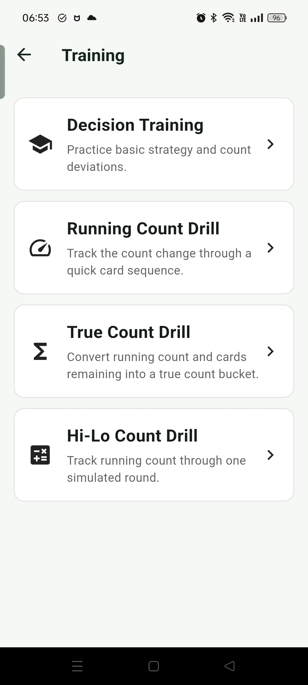
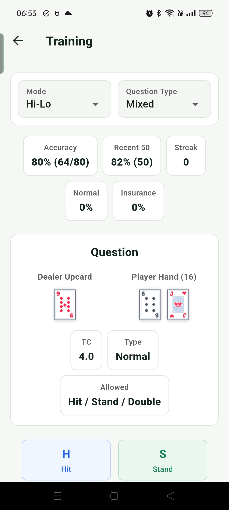
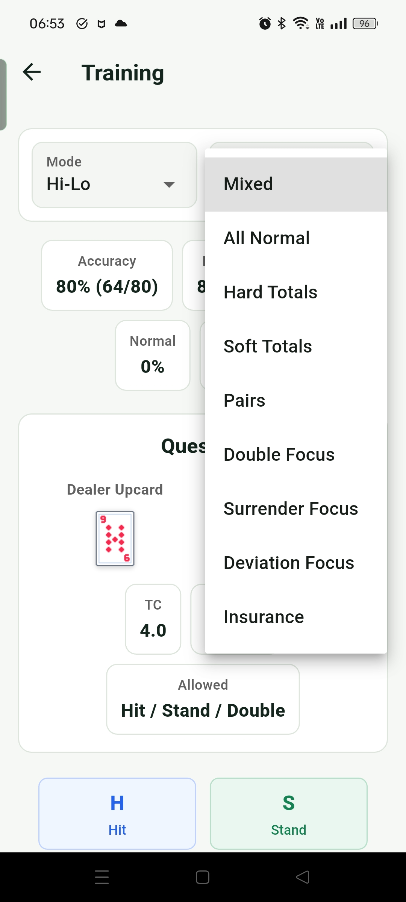
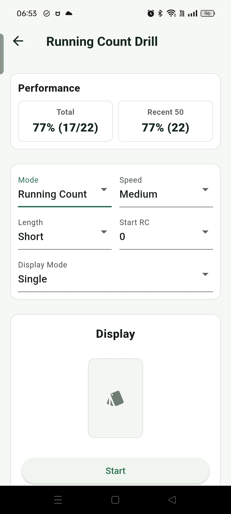
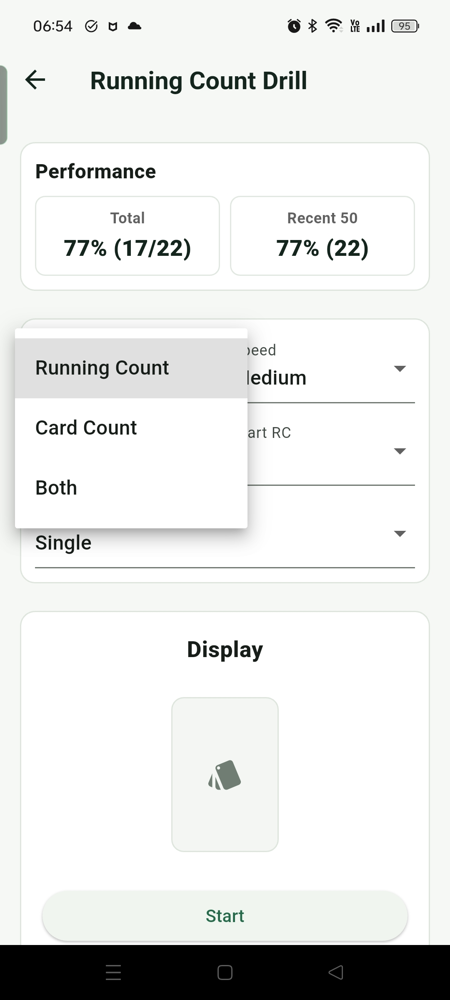
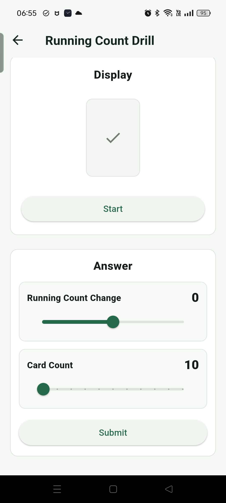
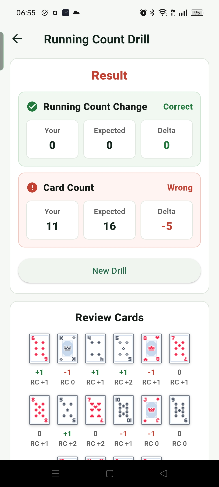
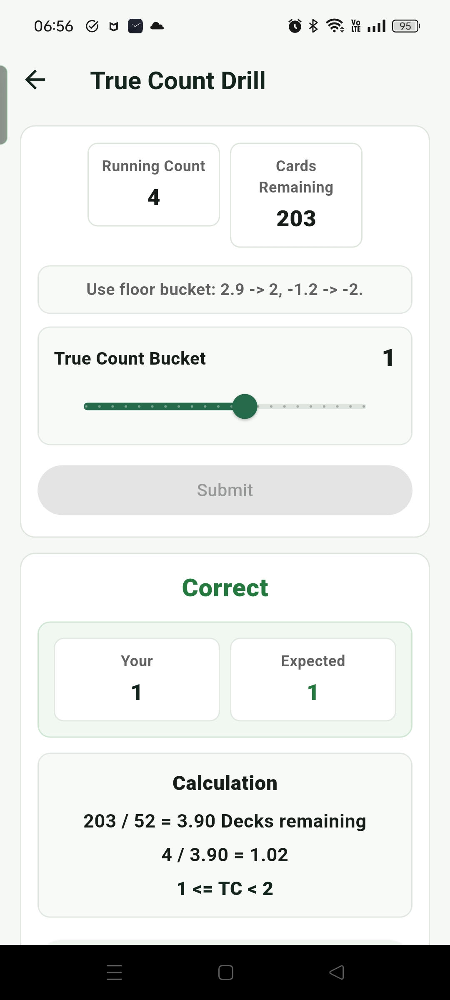
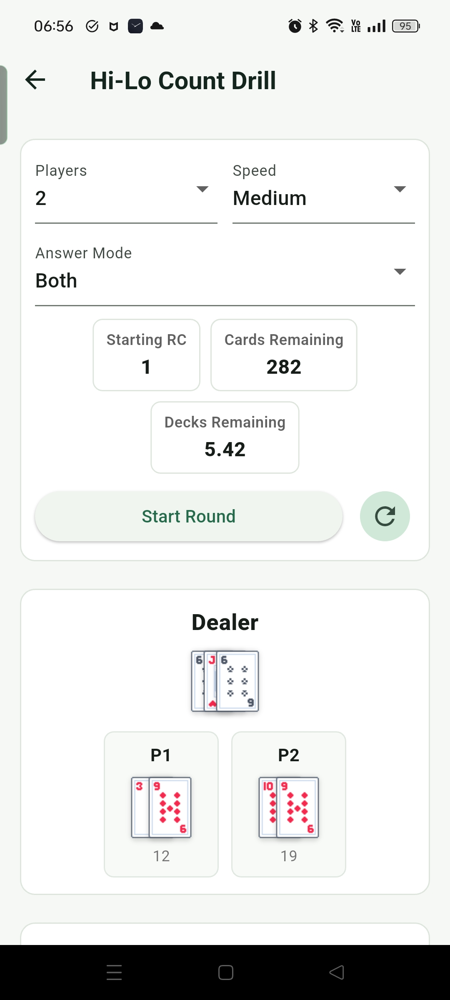

訓練
訓練模式把 blackjack 的幾個核心能力拆開練習：決策、Running Count、True Count 換算，以及接近真實發牌流程的 Hi-Lo 算牌。
訓練總覽

目前包含決策訓練、RC 練習、True Count 計算練習，以及模擬真實發牌的 Hi-Lo 算牌練習。
Decision Training

上方可以調整 Mode 和問題種類，下方會顯示牌局題目與作答按鈕，用來練習每一手的正確決策。

可針對不同分類做專項練習，例如硬牌、軟牌、對子、加倍、投降、保險或偏離。
Running Count Drill

可調整 Mode、牌出現速度、Length、起始 RC，以及 Display Mode。Display 區域會依設定顯示牌，用來訓練追蹤 count 的速度與穩定度。

作答項目可以選 Running Count、Card Count，或兩者一起練。Card Count 用來確認自己是否同時掌握出現牌數。

作答畫面讓使用者輸入最後的 count 結果，適合練習快速心算與累加。

作答後會顯示結果，方便檢查自己在哪一段計算或追蹤時出錯。
True Count Drill

True Count 計算練習會給 Running Count 和剩餘牌數，讓使用者練習把 RC 換算成實用的 TC 判斷。
Hi-Lo Count Drill

Hi-Lo Count Drill 會模擬真實發牌流程，可調整 Players 數量、發牌速度，並練習回答 Running Count 與剩餘牌數。